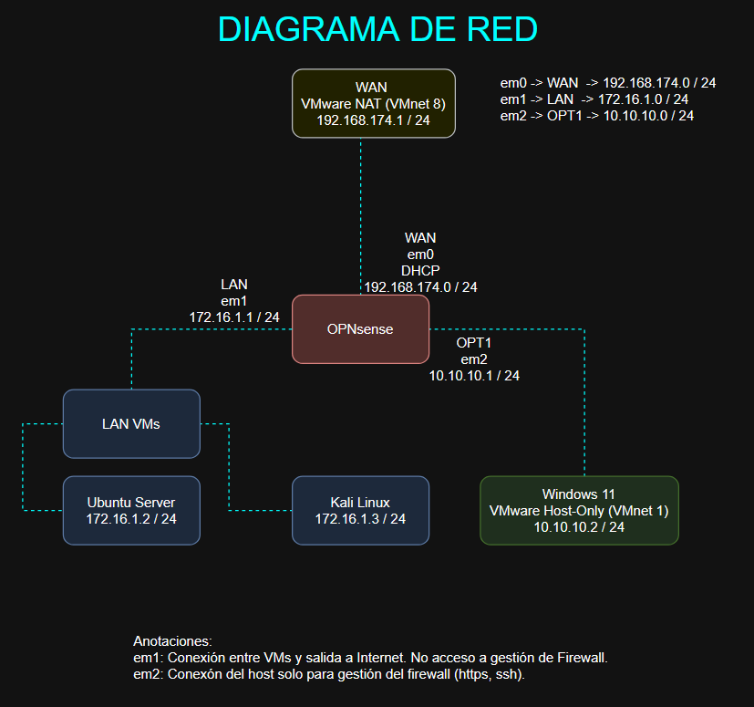

Lab
VMware
Linux
Lab 1: Construcción de Red Segmentada con OPNsense
21/09/2026
Diseñar, configurar e implementar una topología de red segmentada y segura para prácticas de ciberseguridad, aislando el tráfico de laboratorio de la red personal del host. Se configuró OPNsense como firewall principal con tres interfaces: WAN, LAN VMs y Admin.
Descargar PDFObjetivo
Construir un entorno de laboratorio aislado y segmentado que permita realizar prácticas de ciberseguridad sin comprometer la red personal. Se utilizará OPNsense como firewall/router principal y se dividirá la red en tres segmentos: WAN, LAN VMs y Admin.

Requisitos
- VMware Workstation Pro.
- OPNsense-26.7-dvd-amd64.iso
- kali-linux-2026.2-installer-amd64.iso
- ubuntu-26.04.1-live-server-amd64.iso
| VM | RAM | Procesadores | HDD | Network Adapter 1 | Network Adapter 2 | Network Adapter 3 |
|---|---|---|---|---|---|---|
| OPNsense | 1 GB | 2 | 20 GB | NAT | LAN Segment (LAN VMs) | Host-Only |
| Kali Linux | 4 GB | 4 | 40 GB | LAN Segment (LAN VMs) | ||
| Ubuntu Server | 1 GB | 4 | 20 GB | LAN Segment (LAN VMs) |